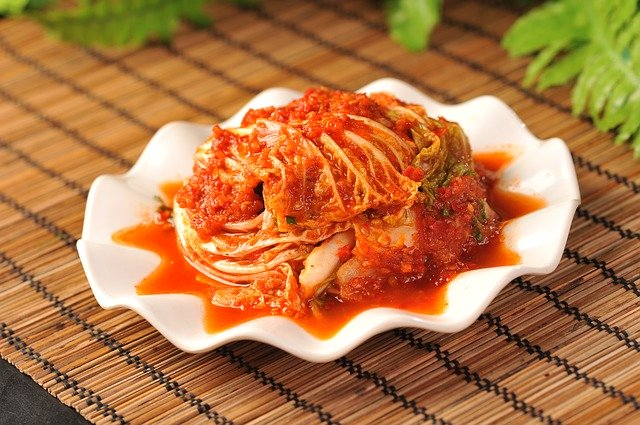

自家製和風キムチ

材料 4人分
- 白菜
- 1/4個
- 塩
- 大さじ3
- 水
- 適量
- りんご
- 30g
- 粉唐辛子
- 大さじ3
- 顆粒和風だし
- 大さじ1
- 塩麹
- 大さじ1
- 塩昆布
- 5g
- すりおろし生姜
- 小さじ2
- すりおろしニンニク
- 小さじ2
作り方
1
りんごをすりおろします。
2
白菜に塩をふりかけ全体になじみ、水分がでるまでしっかり揉み込み、5分程度おきます。
3
水で塩を洗い流し、水気を絞ります。
4
ボウルに1とキムチペーストの材料を入れ、全体によくなじむように混ぜ合わせます。
5
3を1枚ずつめくり、4をまんべんなく塗ります。
6
ジッパー付き保存袋に入れ、空気を抜き、冷蔵庫で2時間程味が染み込むまでおきます。
7
お好みの大きさに切ってお召し上がりください。